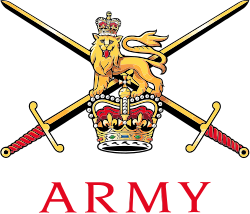
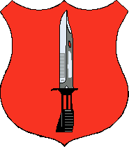
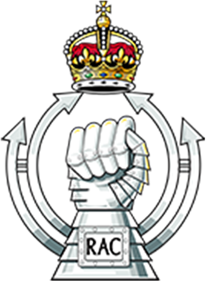
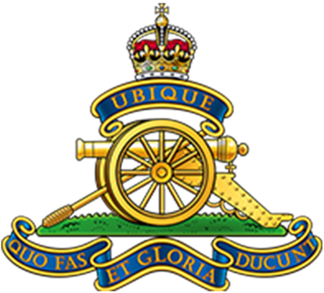
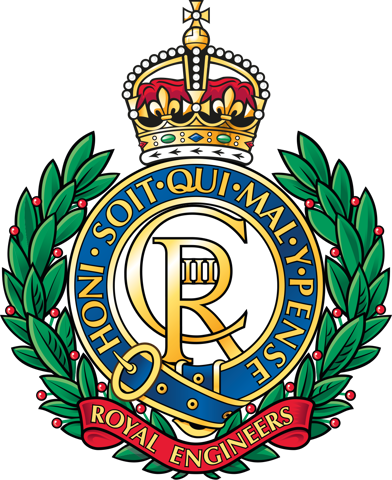
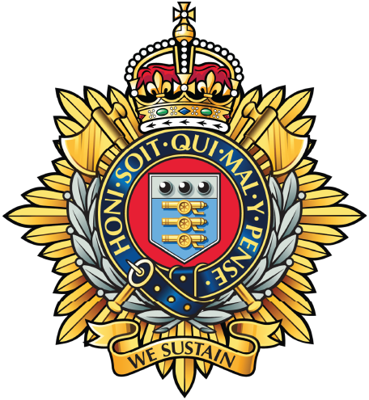
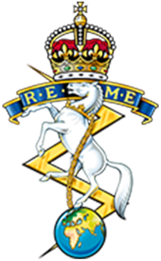
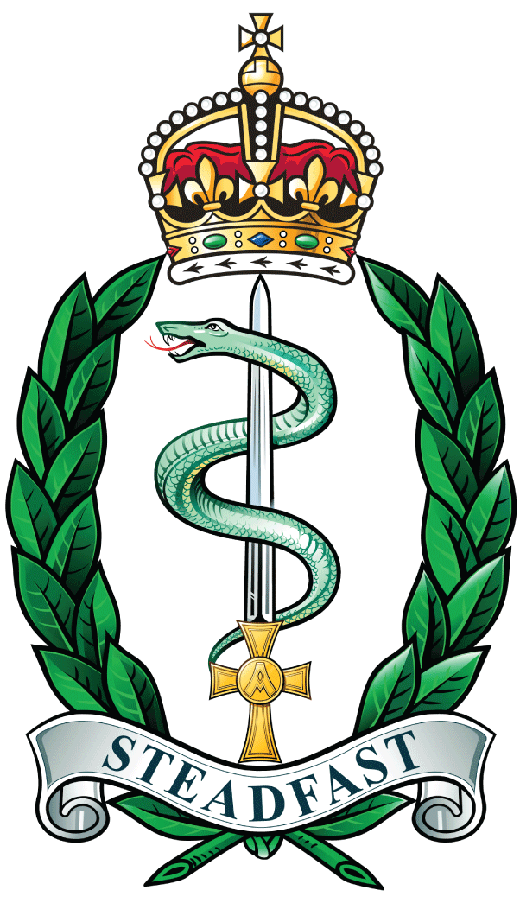

01
CLOSE COMBAT
Combat
Forces primarily responsible for engaging the enemy and controlling ground.
- Infantry
- Armoured forces
- Armoured cavalry

Army StructureAN INTERACTIVE GUIDE
From a small section of soldiers to battlegroups, brigades and divisions, explore how the British Army organises people and capabilities for operations.
Explore the structure ↓FROM SOLDIER TO FORMATION
Army organisations are built from progressively larger groups. Exact numbers and structures vary depending on role, regiment and operational requirements.
FOUNDATION
A section is one of the basic building blocks of infantry organisation. It is normally commanded by a junior non-commissioned officer.
RANK STRUCTURE
Rank identifies a person's position within the Army's command structure. Explore the progression of soldier and officer ranks below.
CAPABILITIES
An effective land force combines units that fight directly with those that provide specialist support, sustainment and logistics.
CLOSE COMBAT
Forces primarily responsible for engaging the enemy and controlling ground.
ENABLE THE FORCE
Specialist capabilities that help combat forces manoeuvre, communicate, understand and influence the battlefield.
SUSTAIN THE FORCE
The personnel and organisations that keep formations supplied, maintained, transported and medically supported.
COMBINED ARMS
A battlegroup is not simply another permanent rung in the hierarchy. It can be assembled around a core unit and reinforced with capabilities needed for a particular operation.
ADD CAPABILITIES
REGIMENTS & CORPS
Select a capability below to explore some of the regiments and corps that contribute to the Army.

Soldiers trained to fight primarily on foot, from light-role operations to armoured infantry.
↗
Provides armour and mounted reconnaissance using vehicles including main battle tanks and specialised reconnaissance platforms.
↗
Provides fires, surveillance and other specialist capabilities to formations.
↗
Military engineers who help forces move, operate, survive and overcome physical obstacles.
↗Provides communications, networks and information services for deployed forces.
↗
Provides logistics including transport, supply and distribution.
↗
The Royal Electrical and Mechanical Engineers keep Army equipment maintained and available.
↗
Provides medical support to soldiers in the UK and on deployed operations.
↗INFANTRY